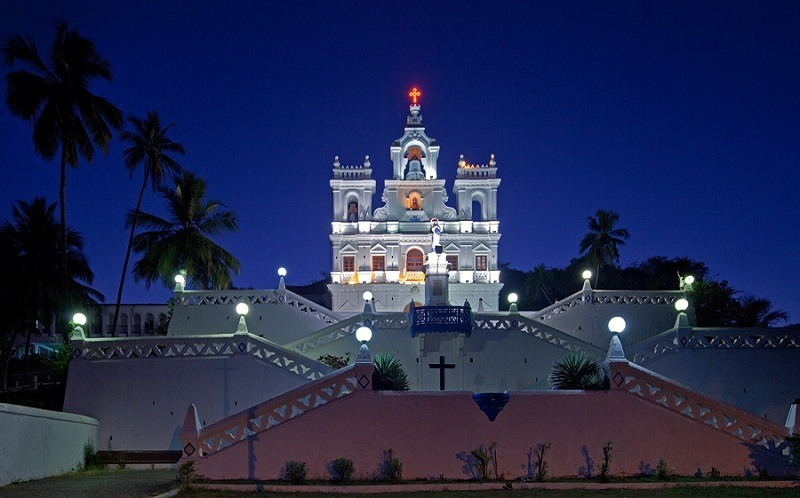

Places to visit in Goa
| About Us | Gallery Page | Sports in Goa | Places to visit | Contact Us |
There are many places to visit in goa that include:-
Beach is an area filled with sand, stones, and rocks, that control the sea levels. Beaches are formed when waves settle the sand and gravel along the shoreline. Beach is a narrow strip of land that lies behind the ocean, river, and lake. Beach is a place to play enjoy and relax.
Fort a strong occupied place by troops surrounded by walls, ditches, and other defense works. Forts are basically millitary constructions used for defence territories.

Waterfalls is a place where water flows from top to bottom in the middle of a Island. Waterfall is basically a river or other bodies of water that has a steep fall over a rocky ledge into a pool of water below. Waterfalls are formed by rivers in between mountains. Water falls are also known as cascades. The porcess of erosion is a crucial part in the formation of a waterfall.
Water Parks are places for kids to play. Water parks are nothing but large amusement parks with swimming pools, water slides, wave pools, fountains, and other attractions such as splash pads, spraygrounds, lazy rivers and many more that involve water.

Temples are religious places of worship for Hindus. Temples are devoted because of a specific god. Temples are also buildings of a main tower, bathing ponds, and gateways. They are unique in size with sculptures. Temples have structural walls which are patterened within 64 grid and some are geometric layouts. Temples are places with peace, happiness, and inspiration. Temple is the house of the lord. God has also established a standard that people should meet.

Churches are the places of worship for the Christians. Churches are also known as the holy buildings, used to conduct the christian assemblies. Churches are basically authorities of Jesus. Churches also have some measure of commitment in which people learn disciplining, bibilical teaching, preaching, and a proper celebration. Churches also believe in leadership, prayer, and worship. Jesus is seen as the head of the church.

Cathedrals are also the places of worship for Christans and it is the church which is the official seat of a bishop. The word cathedral comes from the latin word seat.The architecture inside a cathedral is built by the Roman basilicas and they still maintain the basic structure. Cathedrals are one of the oldest buildings. Cathedrals could be constructed any size and even style.